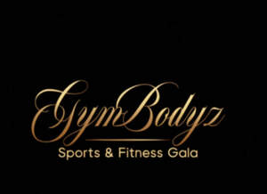

Trade Mark Journal No.2026/003 16 January 2026
UK00004316361 28 December 2025 (41)

- Class 41
- Exercise and fitness classes; Sports and fitness; Health and fitness training; Fitness club services; Television show production; Exercise [fitness] training services; Fitness and exercise training services; Conducting physical fitness conditioning classes; Sports and fitness services; Physical fitness consultation; Physical fitness training services; Live show production services; Entertainment in the nature of fashion shows; Presentation of live show performances; Health club services [health and fitness training]; Physical fitness centres; Fitness and exercise instruction; Show production services; Fitness training services; Conducting fitness classes; Physical fitness instruction; Presentation of live comedy shows; Providing fitness and exercise facilities; Entertainment in the nature of air shows; Entertainment in the nature of television news shows; Conducting training sessions on physical fitness online; Personal fitness training services; Production of entertainment shows featuring dancers; Entertainment in the nature of laser shows; Physical fitness centre services; Tuition in physical fitness; Physical fitness tuition; Personal trainer services [fitness training]; Entertainment in the nature of ongoing game shows; Organization of fashion shows for entertainment purposes; Fashion shows for entertainment purposes (Organization of -); Entertainment services in the nature of an amusement park show; Production of television game shows; Health club services [exercise]; Production of TV shows; Physical fitness education services; Rental of show scenery; Show scenery (Rental of -); Exercise [fitness] advisory services; Organisation of fashion shows for entertainment purposes; Physical fitness centres (Operation of -); Road shows being entertainment services; Live music shows; Training services relating to fitness; Physical fitness assessment services for training purposes; Educational services relating to physical fitness; Production of roller-skating shows; Gym activity classes; Entertainment in the nature of weight lifting competitions; Arranging of entertainment shows; Organising of shows for entertainment purposes.
Ms Paulette Sybliss